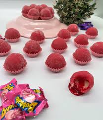

Receitas de Doces
Brigadeiro

- Ingredientes:
- - 1 lata de leite condensado
- - 2 colheres (sopa) de chocolate em pó
- - 1 colher (sopa) de manteiga
- - Chocolate granulado para enrolar
- Modo de Preparo:
- 1. Misture todos os ingredientes em uma panela.
- 2. Cozinhe até desgrudar do fundo.
- 3. Enrole e passe no granulado.
Beijinho

- Ingredientes:
- - 1 lata de leite condensado
- - 1 colher (sopa) de manteiga
- - 100g de coco ralado
- - Cravo-da-índia (opcional)
- Modo de Preparo:
- 1. Cozinhe leite condensado, manteiga e coco até desgrudar.
- 2. Deixe esfriar, enrole e passe no coco.
- 3. Decore com cravo.
Brigadeiro de Bubbaloo

- Ingredientes:
- - 1 lata de leite condensado
- - 1 colher (sopa) de manteiga
- - 4 chicletes Bubbaloo sabor morango
- - Açúcar cristal para enrolar
- Modo de Preparo:
- 1. Derreta os chicletes com manteiga em fogo baixo.
- 2. . Adicione o leite condensado e mexa até desgrudar.
- 3. Deixe esfriar, enrole e passe no açúcar cristal.
Doce de Banana
- Ingredientes:
- - 6 bananas maduras amassadas
- - 1 xícara de açúcar
- - Suco de 1 limão
- - Açúcar cristal para enrolar
- Modo de Preparo:
- 1. Derreta os chicletes com manteiga em fogo baixo.
- 2. . Adicione o leite condensado e mexa até desgrudar.
- 3. Deixe esfriar, enrole e passe no açúcar cristal.
Doce de Leite

- Ingredientes:
- - 1 litro de leite
- - 2 xícaras de açúcar
- Modo de Preparo:
- 1. Cozinhe leite e açúcar em fogo médio e mexendo até engrossar.
- 2. Deixe esfriar antes de servir.
Arroz Doce
- Ingredientes:
- - 1 xícara de arroz
- - 1 litro de leite
- - 1 lata de leite condensado
- - Canela para polvilhar
- Modo de Preparo:
- 1. Cozinhe o arroz em água até amolecer.
- . Adicione o leite e o leite condensado e fique mexendo até engrossar.
- 3. Polvilhe com canela.
Pé de Moleque
- Ingredientes:
- - 500g de amendoim torrado
- - 2 xícaras de açúca
- - 1 lata de leite condensado
- - Canela para polvilhar
- Modo de Preparo:
- 1. Derreta o açúcar em fogo baixo.
- 2. Adicione o amendoim e o leite condensado e fique mexendo até engrossar.
- 3. Despeje em uma forma untada, espere esfriar e corte.
Maria Mole

- Ingredientes:
- - 1 envelope de gelatina sem sabor
- - 1 xícara de água quente
- - 2 xícaras de açúcar
- - Coco ralado
- Modo de Preparo:
- 1. Dissolva a gelatina na água.
- 2. Bata com açúcar até dobrar de volume.
- 3. Despeje em forma, deixe firmar, corte e passe no coco.
Mousse de Maracujá
- Ingredientes:
- - 1 lata de leite condensado
- - 1 lata de creme de leite
- - 1 lata de suco de maracujá (medida pela lata de leite condensado)
- Modo de Preparo:
- 1. Bata todos os ingredientes no liquidificador.
- 2. Leve à geladeira até firmar.
Mousse de Chocolate
- Ingredientes:
- - 200g de chocolate meio amargo derretido
- - 1 lata de creme de leite
- - 3 claras em neve
- - 3 colheres de açúcar
- Modo de Preparo:
- 1. Misture o chocolate derretido com o creme de leite.
- 2. Incorpore delicadamente as claras em neve com o açúcar.
- 3. Leve à geladeira.
Mousse de Morango
- Ingredientes:
- - 1 lata de leite condensado
- - 1 lata de creme de leite
- - 1 pacote de gelatina de morango dissolvida
- - 3 colheres de açúcar
- Modo de Preparo:
- 1. Bata todos os ingredientes no liquidificador.
- 2. Leve à geladeira até firmar.